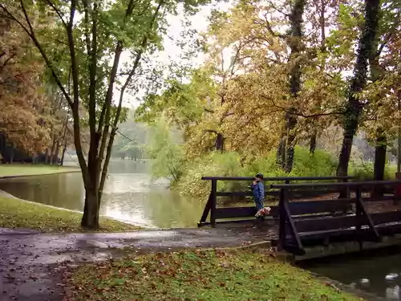

SRBIJA
Karađorđevo se nalazi u jugozapadnom delu Bačke, 50 km od Novog Sada. Prostire se duž leve obale Dunava i čine ga tri prostrane celine: Bukinski rit,
Vranjak i Guvnište.

Po bogatstvu prirode izdvaja se Bukinski rit, koga krase nekadašnje ritske šume uz Dunav. Reljefu ovog prostora osobenost daje mikroreljef sa velikim
brojem dubljih i plićih depresija. Ritske šume, autohtonih topola i vrba stanište su i brojnih retkih i ugroženih biljnih vrsta. U žbunastoj vegetaciji
izdvaja se panonski subendem crni glog, zatim žuti lokvanj, a u močvarnoj vegetaciji iđirot – vrsta koje se nalazi na Crvenoj listi flore Srbije i
zakonski je zaštićena. Bukinski rit utočište je i velikog broja divljači, pre svega jelena i divlje svinje, kao i retkih i ugroženih vrsta sisara:
vidre, divlje mačke, kune i ptica močvarica: orla belorepana i crne rode. Ovo područje prirodno je mrestilište brojnih vrsta riba i stanište vodozemaca
i gmizavaca.
Prostorne cerline Vranjak i Guvnište, tipično su ravničarsko područje, koje karakteriše blago talasata nizijska površina, sa malim razlikama u
nadmorskoj visini. Preostale autohtone šume, koje čine zajednice hrasta lužnjaka i žestilja, kao i poljskog jasena i bresta imaju neprocenjiv ekološki
i biogeografski značaj, jer su svojevrstan dokument o istoriji i karakteru vegetacije Vojvodine. Od životinjskih vrsta ovde se mogu naći: jelen lopatar,
muflon i američki (virdžinijski) belorepi jelen, dobrog trofejnog kvaliteta.
Zahvaljujući bujnim šumama hrasta, bagrema i vrbe, koje u sebi kriju brojnu visoku i nisku divljač velike trofejne vrednosti, lovište „Karađorđevo“
privlači brojne lovce iz zemlje i inostranstva, kojima su na raspolaganju fijakeri, sanke, čamci, terenska vozila i druga oprema. U svojoj lovnoj
istoriji ostvarilo je vrhunske trofejne rezultate svetskog prvaka kod muflona sa 242 poena i jazavca sa 24 poena.
Pored lova, gostima se nudi mogućnost izleta do čuvene ergele konja sa muzejom, čije vitrine krase trofeji sa brojnih hipodroma, jahanje konja u
prirodi, vožnja fijakerom, obilazak tvrđave Bač i manastira Bođani, piknik u lovačkom centru „Vranjak“ i drugi programi. Na obali Dunava i njegovim
rukavcima postoji mogućnost sportskog ribolova na šarana, smuđa i soma.